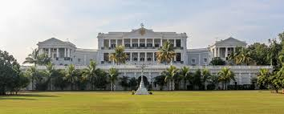

Falaknuma Palace
Falaknuma Palace, meaning "Mirror of the Sky", is a grand palace located in Hyderabad. It was built by the Nizam of Hyderabad in the 19th century and showcases exquisite architecture and luxurious interiors.
Location: Falaknuma, Hyderabad, Telangana, India
Ticket Price: Guided tours available with prior booking
Transportation: Accessible by road, well-connected by local taxis. Nearest metro station is Ameerpet.